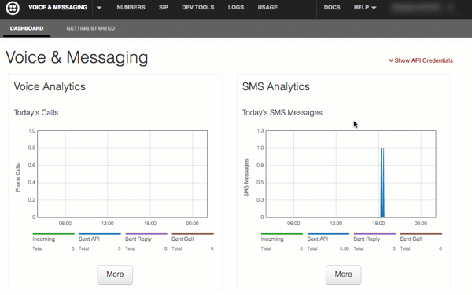

The Twilio platform makes adding voice, SMS, and VoIP capabilities to your applications ridiculously simple. This helper library for node aims to make it even easier. This documentation page code and format is adapted from the awesome/utilitary format used to document the popular Backbone and Underscore JavaScript frameworks, created by Jeremy Ashkenas and other open source contributors.
The twilio-node project is hosted on GitHub. You can report bugs and discuss features on the issues page, on Freenode in the #twilio channel, or send tweets to @kevinwhinnery.
twilio-node is available as an npm package. Install the latest version with:
npm install twilio
To begin using Twilio to make voice calls, send SMS, and create VoIP clients, you first need to sign up for an account. After signing up, you will be able to access an account SID and auth token which will be used to authenticate requests to the Twilio back end. This information can be found on your dashboard:

With these credentials, you can begin to use this node module, as in the following example:
//require the Twilio module and create a REST client
var client = require('twilio')('ACCOUNT_SID', 'AUTH_TOKEN');
//Send an SMS text message
client.sendMessage({
to:'+16515556677', // Any number Twilio can deliver to
from: '+14506667788', // A number you bought from Twilio and can use for outbound communication
body: 'hi friend!' // body of the SMS message
}, function(err, responseData) { //this function is executed when a response is received from Twilio
if (!err) { // "err" is an error received during the request, if any
// "responseData" is a JavaScript object containing data received from Twilio.
// A sample response from sending an SMS message is here (click "JSON" to see how the data appears in JavaScript):
// http://www.twilio.com/docs/api/rest/sending-sms#example-1
console.log(responseData.from); // outputs "+14506667788"
console.log(responseData.body); // outputs "hi friend!"
}
});
//Place a phone call, and respond with TwiML instructions from the given URL
client.makeCall({
to:'+16515556677', // Any number Twilio can call
from: '+14506667788', // A number you bought from Twilio and can use for outbound communication
url: 'http://www.example.com/twiml.php' // A URL that produces an XML document (TwiML) which contains instructions for the call
}, function(err, responseData) {
//executed when the call has been initiated.
console.log(responseData.from); // outputs "+14506667788"
});
Example usage of the REST API can be found inline with our official REST API docs.
This module provides API clients for Twilio REST APIs. Please refer to the reference documentation linked below for API docs and specific examples. Clients are provided for:
| Core REST API | Sending and receiving messages, making phone calls, accessing account data |
|---|---|
| TaskRouter | Manage work distribution in a Twilio application, as in a call center or lead distribution use case. |
| Phone Number Lookups | Get information about phone numbers and proper formatting. Find out if it's a mobile number or a land line. |
// Create a client:
var client = require('twilio')('ACCOUNT_SID', 'AUTH_TOKEN');
//Get a list of calls made by this account
// GET /2010-04-01/Accounts/ACCOUNT_SID/Calls
// alias for get is "list", if you prefer
client.calls.get(function(err, response) {
response.calls.forEach(function(call) {
console.log('Received call from: ' + call.from);
console.log('Call duration (in seconds): ' + call.duration);
});
});
//Get a list of calls made by this account, from this phone number
// GET /2010-04-01/Accounts/ACCOUNT_SID/Calls?From=+16513334455
client.calls.get({
from:'+16513334455'
}, function(err, response) {
response.calls.forEach(function(call) {
console.log('Received call from: ' + call.from);
console.log('This call\'s unique ID is: ' + call.sid);
});
});
//Get data for a specific call
// GET /2010-04-01/Accounts/ACCOUNT_SID/Calls/abc123...
client.calls('abc123...').get(function(err, call) {
console.log('This call\'s unique ID is: ' + call.sid);
console.log('This call was created at: ' + call.dateCreated);
});
//Get data for a specific call, for a specific account
// GET /2010-04-01/Accounts/AC.../Calls/abc123...
client.accounts('AC...').calls('abc123...').get(function(err, response) {
response.calls.forEach(function(call) {
console.log('Received call from: ' + call.from);
console.log('This call\'s unique ID is: ' + call.sid);
});
});
// Create (send) an SMS message
// POST /2010-04-01/Accounts/ACCOUNT_SID/SMS/Messages
// "create" and "update" aliases are in place where appropriate on PUT and POST requests
client.sms.messages.post({
to:'+16515559999',
from:'+14503334455',
body:'hi friend!'
}, function(err, text) {
console.log('You sent: '+ text.body);
console.log('Current status of this text message is: '+ text.status);
});
// Delete a TwiML application
// DELETE /2010-04-01/Accounts/ACCOUNT_SID/Applications/APP...
client.applications('APP...').delete(function(err, response, nodeResponse) {
//DELETE requests do not return data - if there was no error, it worked.
err ? console.log('There was an error') : console.log('it worked!');
});
Any resource request you make can be done for a specific subaccount as well. This lets you track usage of calls, text messages, etc. for different users of your application. By default, all requests are made using the "master" account, but using the "accounts" resource allows you to make all the same requests, but for a specific account:
var client = require('twilio')('ACCOUNT_SID', 'AUTH_TOKEN'),
SOME_SUBACCOUNT_SID = 'AC...';
//Send a text message, associated with the given subaccount
client.accounts(SOME_SUBACCOUNT_SID).sms.messages.create({
to:'+16512223333',
from:'+14505556677',
body:'hi subaccount friend!'
}, function(err, text) {
console.log('You sent: '+ text.body);
console.log('Current status of this text message is: '+ text.status);
});
//This REST call using the master/default account for the client...
client.makeCall({
to:'+16512223333',
from:'+14505556677',
url:'http://example.com/someTwiml.php'
}, function(err, call) {
console.log('This call\'s unique ID is: ' + call.sid);
console.log('This call was created at: ' + call.dateCreated);
});
//...is the same as...
client.accounts(ACCOUNT_SID).calls.create({
to:'+16512223333',
from:'+14505556677',
url:'http://example.com/someTwiml.php'
}, function(err, data) {
console.log('This call\'s unique ID is: ' + call.sid);
console.log('This call was created at: ' + call.dateCreated);
});
There are two ways to manage data that is returned from the REST API. Thus far, all of our examples have used callbacks to work with response data, using the node.js standard callback format of function(error, data) { ... }.
However, it is common to need to make multiple sequential calls to the Twilio REST API, such as when searching for, then purchasing, new incoming phone numbers. When you make multiple calls to Twilio using nested callbacks, your code can quickly start marching to the right, forming the dreaded " pyramid of doom".
One technique for unrolling nested callbacks is to use promises. In node.js, the de facto standard library for providing promises is Q. twilio-node uses Q to provide an alternative interface to callbacks where it makes sense.
80% of the time, if you're just making a single request and you won't need the data again later, you should probably just use the callback interface. If you're making multiple calls in a row to Twilio, you might want to look at using promises instead. Both work fine - it's up to you on what you'd prefer to use.
For more information on how to work with the promise object, check out the reference docs for the Q library.
Promise Examples
// Create an authenticated Twilio REST API client
var twilio = require('twilio');
var client = new twilio.RestClient('ACCOUNT_SID', 'AUTH_TOKEN');
// A simple example of making a phone call using promises
var promise = client.makeCall({
to:'+16515556667777', // a number to call
from:'+16518889999', // a Twilio number you own
url:'https://demo.twilio.com/welcome/voice' // A URL containing TwiML instructions for the call
});
// You can assign functions to be called, at any time, after the request to
// Twilio has been completed. The first function is called when the request
// succeeds, the second if there was an error.
promise.then(function(call) {
console.log('Call success! Call SID: '+call.sid);
}, function(error) {
console.error('Call failed! Reason: '+error.message);
});
// Let's look at an example where we're making multiple requests to Twilio, like
// buying a new phone number. This is where promises can become very useful:
// First, search for available phone numbers
client.availablePhoneNumbers('US').local.get({
areaCode:'651'
}).then(function(searchResults) {
// handle the case where there are no numbers found
if (searchResults.availablePhoneNumbers.length < 1) {
throw { message:'No numbers found with that area code' };
}
// Okay, so there are some available numbers. Now, let's buy the first one
// in the list. Return the promise created by the next call to Twilio:
return client.incomingPhoneNumbers.create({
phoneNumber:searchResults.availablePhoneNumbers[0].phoneNumber,
voiceUrl:'https://demo.twilio.com/welcome/voice',
smsUrl:'https://demo.twilio.com/welcome/sms/reply'
});
}).then(function(number) {
// We bought the number! Everything worked!
console.log('Your new number: '+number.phoneNumber);
}).fail(function(error) {
// This callback will be invoked on any error returned in the
// process.
console.log('Number purchase failed! Reason: '+error.message);
}).fin(function() {
// You can use this optional callback like a "finally" block
// It will always execute last. Perform any cleanup necessary here.
});
requestclient.request(requestOptions[, callback])
Makes an authenticated HTTP request against the Twilio back end. Typically, an end user
WILL NOT use this function, but rather one of the resource-specific functions or
shorthand functions. Returns a promise that can be
used to work with data returned by the API.
Example:
var twilio = require('twilio');
var client = new twilio.RestClient('ACCOUNT_SID', 'AUTH_TOKEN');
client.request({
url:'/Accounts',
method:'GET'
}, function (error, responseData) {
//work with response data
});
When your Twilio application needs to respond to an incoming SMS message or voice call input, the developer gives Twilio instructions on what to do using a special XML instruction set called "TwiML". The TwimlResponse object makes creating a proper TwiML XML string very easy. The resulting TwiML string can be rendered to the end user using the node.js HTTP server APIs directly, or using a higher level web framework like express.
Constructornew twilio.TwimlResponse()
Create a TwiML
response, which can later be serialized to XML.
Example:
var twilio = require('twilio');
var resp = new twilio.TwimlResponse();
TwiML Basics
The TwimlResponse object provides JavaScript functions to construct the
TwiML verbs that are appropriate
for the given parent node. Each JavaScript function takes the following arguments, in any order:
var twilio = require('twilio');
var resp = new twilio.TwimlResponse();
resp.say('Welcome to Twilio!');
resp.say('Please let us know if we can help during your development.', {
voice:'woman',
language:'en-gb'
});
console.log(resp.toString());
/**
Outputs the following:
<?xml version="1.0" encoding="UTF-8"?>
<Response>
<Say>Welcome to Twilio!</Say>
<Say voice="woman" language="en-gb">Please let us know if we can help during your development.</Say>
</Response>
*/
Rendering the actual XML document is done with the toString function. The following node program would render a TwiML document when a request was received to the HTTP server running on port 1337:
var http = require('http'),
twilio = require('twilio');
http.createServer(function (req, res) {
//Create TwiML response
var twiml = new twilio.TwimlResponse();
twiml.say('Hello World!');
res.writeHead(200, {'Content-Type': 'text/xml'});
res.end(twiml.toString());
}).listen(1337, '127.0.0.1');
console.log('TwiML servin\' server running at http://127.0.0.1:1337/');
Chaining Syntax
You can add multiple nodes to a TwiML document in a single statement by chaining function calls:
var twilio = require('twilio');
var resp = new twilio.TwimlResponse();
resp.say('Welcome to Twilio!')
.pause({ length:3 })
.say('Please let us know if we can help during your development.', {
voice:'woman',
language:'en-gb'
})
.play('http://www.example.com/some_sound.mp3');
console.log(resp.toString());
/**
Outputs the following:
<?xml version="1.0" encoding="UTF-8"?>
<Response>
<Say>Welcome to Twilio!</Say>
<Pause length="3"></Pause>
<Say voice="woman" language="en-gb">Please let us know if we can help during your development.</Say>
<Play>http://www.example.com/some_sound.mp3</Play>
</Response>
*/
Nesting TwiML Nodes
Some TwiML verbs have other nouns or verbs nested within them. You can create these nested structures
by passing a function to a parent node, which will be executed in the context of the parent node.
Within this callback function, this will refer to the parent node, which will have JavaScript
functions that map to the allowed syntax for child nodes of the parent:
var twilio = require('twilio');
var resp = new twilio.TwimlResponse();
resp.say('Welcome to Acme Customer Service!')
.gather({
action:'http://www.example.com/callFinished.php',
finishOnKey:'*'
}, function() {
this.say('Press 1 for customer service')
.say('Press 2 for British customer service', { language:'en-gb' });
});
console.log(resp.toString());
/**
Outputs the following:
<?xml version="1.0" encoding="UTF-8"?>
<Response>
<Say>Welcome to Acme Customer Service!</Say>
<Gather action="http://www.example.com/callFinished.php" finishOnKey="*">
<Say>Press 1 for customer service.</Say>
<Say language="en-gb">Press 2 for British customer service.</Say>
</Gather>
</Response>
*/
Alternately, the first argument to the child node building function is also a reference to the parent node, so the following code is equivalent:
var twilio = require('twilio');
var resp = new twilio.TwimlResponse();
resp.say('Welcome to Acme Customer Service!')
.gather({
action:'http://www.example.com/callFinished.php',
finishOnKey:'*'
}, function(node) { //note the use of the "node" variable in the anonymous function
//Now you can use this reference as well, if using "this" wrankles you
node.say('Press 1 for customer service')
.say('Press 2 for British customer service', { language:'en-gb' });
});
console.log(resp.toString());
/**
Outputs the following:
<?xml version="1.0" encoding="UTF-8"?>
<Response>
<Say>Welcome to Acme Customer Service!</Say>
<Gather action="http://www.example.com/callFinished.php" finishOnKey="*">
<Say>Press 1 for customer service.</Say>
<Say language="en-gb">Press 2 for British customer service.</Say>
</Gather>
</Response>
*/
Here is an example of how to generate a TwiML conference call:
var twilio = require('twilio');
var resp = new twilio.TwimlResponse();
resp.say('Your conference call is starting.',
{
voice:'woman',
language:'en-gb'
})
.dial({
action:'http://example.com/something.php'
}, function(node) {
node.conference('waitingRoom', {
beep:'false'
});
});
console.log(resp.toString());
/**
Outputs the following:
<?xml version="1.0" encoding="UTF-8"?>
<Response>
<Say voice="woman" language="en-gb">Your conference call is starting.</Say>
<Dial action="http://example.com/something.php">
<Conference beep="false">waitingRoom</Conference>
</Dial>
</Response>
*/
Using Twilio Client requires the use of a capability token, which enables client access to Twilio's VoIP platform. These capability tokens can be used either in the browser or in native apps for iOS and Android. This utility is intended to allow node.js applications the ability to generate these capability tokens on the server side. For a complete node example using the express web framework, check out the examples on GitHub.
Constructornew twilio.Capability(accountSid, authToken)
Create a capability token generator for use with Twilio Client.
Example:
var twilio = require('twilio');
var capability = new twilio.Capability(ACCOUNT_SID, AUTH_TOKEN);
allowClientIncomingcapability.allowClientIncoming(clientName)
Add a capability to the token generator which will allow incoming calls to the given clientName.
Example:
var twilio = require('twilio');
var capability = new twilio.Capability(ACCOUNT_SID, AUTH_TOKEN);
//Create a capability token for a client named "jenny"
capability.allowClientIncoming('jenny');
var token = capability.generate();
allowClientOutgoingcapability.allowClientOutgoing(twimlAppSid)
Add a capability to the token generator which will allow the client to make outgoing calls,
using the TwiML app with the given
twimlAppSid
Example:
var twilio = require('twilio');
var capability = new twilio.Capability(ACCOUNT_SID, AUTH_TOKEN);
//Create a capability token using the TwiML app with sid "AP123"
capability.allowClientOutgoing('AP123');
var token = capability.generate();
generatecapability.generate([timeout])
Generate a capability token with the configured permissions, which by default will expire
after one hour.
Example:
var twilio = require('twilio');
var capability = new twilio.Capability(ACCOUNT_SID, AUTH_TOKEN);
//Create a capability token using the TwiML app with sid "AP123", that expires in two minutes
capability.allowClientOutgoing('AP123');
var token = capability.generate(120);
validateRequesttwilio.validateRequest(authToken, header, url, params)
When Twilio sends a request to your web app, it sends a special header called X-Twilio-Signature.
This header is a hashed value that we can use on the server side to confirm that a request has indeed
originated from Twilio. More details on this security measure are located
here.
This function will return a boolean indicating whether or not, given the request URL, POST/GET parameters,
and your auth token, a request was actually sent from Twilio.
Example:
var twilio = require('twilio'),
http = require('http'),
qs = require('querystring');
http.createServer(function (req, res) {
if (req.method == 'POST') {
var body = '';
req.on('data', function (data) {
body += data;
});
req.on('end', function () {
var POST = qs.parse(body);
//validate incoming request is from twilio using your auth token and the header from Twilio
var token = 'YOUR_TWILIO_AUTH_TOKEN',
header = req.headers['x-twilio-signature'];
//validateRequest returns true if the request originated from Twilio
if (twilio.validateRequest(token, header, 'http://twilio-raw.herokuapp.com', POST)) {
//generate a TwiML response
var resp = new twilio.TwimlResponse();
resp.say('hello, twilio!');
res.writeHead(200, { 'Content-Type':'text/xml' });
res.end(resp.toString());
}
else {
res.writeHead(403, { 'Content-Type':'text/plain' });
res.end('you are not twilio - take a hike.');
}
});
}
else {
res.writeHead(404, { 'Content-Type':'text/plain' });
res.end('send a POST');
}
}).listen(80);
validateExpressRequesttwilio.validateExpressRequest(request, authToken)
This is a helper function which decomposes an Express request object
and uses validateRequest to determine if the request was sent by Twilio. Returns true
if the request was sent by Twilio. NOTE: This function requires the developer to use the bodyParser middleware to function. Check out how to use this middleware in the express documentation.
Example:
var express = require('express'),
bodyParser = require('body-parser'),
http = require('http'),
path = require('path'),
twilio = require('twilio');
var app = express();
app.use(bodyParser.urlencoded({
extended: true
}));
// Twilio request authentication
app.post('/twiml', function(req, res) {
if (twilio.validateExpressRequest(req, 'YOUR_TWILIO_AUTH_TOKEN')) {
var resp = new twilio.TwimlResponse();
resp.say('express sez - hello twilio!');
res.type('text/xml');
res.send(resp.toString());
}
else {
res.status(403).send('you are not twilio. Buzz off.');
}
});
// Start an HTTP server with this Express app
app.listen(process.env.PORT || 3000);
If you need to supply a custom URL you can do so like this:
var express = require('express'),
bodyParser = require('body-parser'),
http = require('http'),
path = require('path'),
twilio = require('twilio');
var app = express();
app.use(bodyParser.urlencoded({
extended: true
}));
// Twilio request authentication with custom URL
app.post('/twiml', function(req, res) {
var options = { url: 'https://subtle-gradient-188.herokuapp.com/twiml' };
if (twilio.validateExpressRequest(req, 'YOUR_TWILIO_AUTH_TOKEN', options)) {
var resp = new twilio.TwimlResponse();
resp.say('express sez - hello twilio!');
res.type('text/xml');
res.send(resp.toString());
}
else {
res.status(403).send('you are not twilio. Buzz off.');
}
});
// Start an HTTP server with this Express app
app.listen(process.env.PORT || 3000);
webhooktwilio.webhook([authToken, options])
This function returns an Express middleware function that uses validateExpressRequest to determine if the request was sent by Twilio, and adds some API sugar to make the Express response object aware of TwimlResponse objects and how to properly send() them. Note that this middleware was built specifically for Express, and may or may not work with other Connect middleware-based frameworks. Arguments can be passed in any order. Request validation requires your Twilio auth token.
If validation is enabled (this is the default) and the request was sent by Twilio, the middleware calls next() and allows further processing. If validation fails, it renders plain text and a 403 reponse. If no auth token is configured, it prints a message to console.error and returns a 500. NOTE: This function requires the developer to use the bodyParser middleware to function. Check out how to use this middleware in the express documentation.
Example:
var express = require('express'),
bodyParser = require('body-parser'),
twilio = require('twilio');
// Create an express app which will parse form-encoded request bodies
var app = express();
app.use(bodyParser.urlencoded({
extended: true
}));
// Create an SMS webhook that validates using your Twilio auth token, configured
// in "process.env.TWILIO_AUTH_TOKEN". Also adds functionality to "response.send"
// to make it intelligently handle TwimlResponse objects. If "response.send" is
// passed a TwimlResponse object, it will automatically set the proper
// Content-Type header and call "toString()" on the TwimlResponse object
app.post('/sms', twilio.webhook(), function(request, response) {
var twiml = new twilio.TwimlResponse();
twiml.message('This HTTP request came from Twilio!');
response.send(twiml);
});
// Manually configure host and protocol info for the webhook you defined for your Twilio number
app.post('/foo/bar/sms', twilio.webhook({
host:'gassy-ocelot-129.herokuapp.com',
protocol:'https'
}), function(request, response) {
var twiml = new twilio.TwimlResponse();
twiml.message('This HTTP request came from Twilio!');
response.send(twiml);
});
// Alternately, you could configure the whole URL...
app.post('/foo/bar/sms', twilio.webhook({
url:'https://gassy-ocelot-129.herokuapp.com/foo/bar/sms',
}), function(request, response) {
var twiml = new twilio.TwimlResponse();
twiml.message('This HTTP request came from Twilio!');
response.send(twiml);
});
// This webhook performs no validation - this might be used for a fallback URL
// for your Twilio number, to ensure a response is always sent back to the user.
app.post('/fallback', twilio.webhook({
validate:false
}), function(request, response) {
var twiml = new twilio.TwimlResponse();
twiml.message('Sorry - there was an error processing your message.');
response.send(twiml);
});
// Start an HTTP server with this Express app
app.listen(process.env.PORT || 3000);
Usage of the Twilio platform requires a valid account SID and auth token. You can sign up and receive those credentials here.
The official Twilio docs are located here.
Helper libraries are available for a variety of environments and programming langauges - check out Twilio's GitHub repository here.